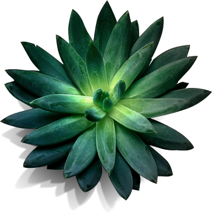

Здесь можно поужинать с семьей или друзьями, провести деловую встречу, отметить день рождения, устроить веселую вечеринку.
ВЕРНУТЬСЯ
НА ГЛАВНУЮ
НА ГЛАВНУЮ
О РЕСТОРАНЕ
«Арияф» — ресторан арабской кухни. Нас выбирают те, кто ценит хорошую еду, дружеское общение и качественный сервис. Сюда приходят, чтобы вкусно и сытно поесть, расслабиться и как следует отдохнуть в непринужденной и доброжелательной обстановке.
По признанию наших гостей, обстановка и детали интерьера ресторана «Арияф» восстанавливают душевное равновесие. В оформлении ресторанов поддерживается неповторимый и хорошо узнаваемый стиль:
- красно-белые навесы
- деревянная мебель
- лампы от Тиффани
Знаменитый бар с латунными подставками для ног и многочисленными барными стульями — излюбленное место тех, кому нравится наблюдать за мастерством барменов. В каждом ресторане есть колокол, который звонит всякий раз, когда гости оставляют чаевые.
03
Еще «Арияф» славится своей коллекцией старинных вещей, которые могут поведать немало интересных историй. Раритеты для ресторана «Арияф» разыскиваются и собираются по всему миру, и в ресторанах можно услышать легенду о каждом из них.
По признанию наших гостей, обстановка и детали интерьера ресторана «Арияф» восстанавливают душевное равновесие. В оформлении ресторанов поддерживается неповторимый и хорошо узнаваемый стиль: красно-белые навесы, деревянная мебель и лампы от Тиффани. Знаменитый бар с латунными подставками для ног и многочисленными барными стульями — излюбленное место тех, кому нравится наблюдать за мастерством барменов. В каждом ресторане есть колокол, который звонит всякий раз, когда гости оставляют чаевые.
По признанию наших гостей, обстановка и детали интерьера ресторана «Арияф» восстанавливают душевное равновесие. В оформлении ресторанов поддерживается неповторимый и хорошо узнаваемый стиль: красно-белые навесы, деревянная мебель и лампы от Тиффани. Знаменитый бар с латунными подставками для ног и многочисленными барными стульями — излюбленное место тех, кому нравится наблюдать за мастерством барменов. В каждом ресторане есть колокол, который звонит всякий раз, когда гости оставляют чаевые.
По признанию наших гостей, обстановка и детали интерьера ресторана «Арияф» восстанавливают душевное равновесие. В оформлении ресторанов поддерживается неповторимый и хорошо узнаваемый стиль: красно-белые навесы, деревянная мебель и лампы от Тиффани. Знаменитый бар с латунными подставками для ног и многочисленными барными стульями — излюбленное место тех, кому нравится наблюдать за мастерством барменов. В каждом ресторане есть колокол, который звонит всякий раз, когда гости оставляют чаевые.
По признанию наших гостей, обстановка и детали интерьера ресторана «Арияф» восстанавливают душевное равновесие. В оформлении ресторанов поддерживается неповторимый и хорошо узнаваемый стиль: красно-белые навесы, деревянная мебель и лампы от Тиффани. Знаменитый бар с латунными подставками для ног и многочисленными барными стульями — излюбленное место тех, кому нравится наблюдать за мастерством барменов. В каждом ресторане есть колокол, который звонит всякий раз, когда гости оставляют чаевые.
По признанию наших гостей, обстановка и детали интерьера ресторана «Арияф» восстанавливают душевное равновесие. В оформлении ресторанов поддерживается неповторимый и хорошо узнаваемый стиль: красно-белые навесы, деревянная мебель и лампы от Тиффани. Знаменитый бар с латунными подставками для ног и многочисленными барными стульями — излюбленное место тех, кому нравится наблюдать за мастерством барменов. В каждом ресторане есть колокол, который звонит всякий раз, когда гости оставляют чаевые.
По признанию наших гостей, обстановка и детали интерьера ресторана «Арияф» восстанавливают душевное равновесие. В оформлении ресторанов поддерживается неповторимый и хорошо узнаваемый стиль: красно-белые навесы, деревянная мебель и лампы от Тиффани. Знаменитый бар с латунными подставками для ног и многочисленными барными стульями — излюбленное место тех, кому нравится наблюдать за мастерством барменов. В каждом ресторане есть колокол, который звонит всякий раз, когда гости оставляют чаевые.
По признанию наших гостей, обстановка и детали интерьера ресторана «Арияф» восстанавливают душевное равновесие. В оформлении ресторанов поддерживается неповторимый и хорошо узнаваемый стиль: красно-белые навесы, деревянная мебель и лампы от Тиффани. Знаменитый бар с латунными подставками для ног и многочисленными барными стульями — излюбленное место тех, кому нравится наблюдать за мастерством барменов. В каждом ресторане есть колокол, который звонит всякий раз, когда гости оставляют чаевые.
По признанию наших гостей, обстановка и детали интерьера ресторана «Арияф» восстанавливают душевное равновесие. В оформлении ресторанов поддерживается неповторимый и хорошо узнаваемый стиль: красно-белые навесы, деревянная мебель и лампы от Тиффани. Знаменитый бар с латунными подставками для ног и многочисленными барными стульями — излюбленное место тех, кому нравится наблюдать за мастерством барменов. В каждом ресторане есть колокол, который звонит всякий раз, когда гости оставляют чаевые.
По признанию наших гостей, обстановка и детали интерьера ресторана «Арияф» восстанавливают душевное равновесие. В оформлении ресторанов поддерживается неповторимый и хорошо узнаваемый стиль: красно-белые навесы, деревянная мебель и лампы от Тиффани. Знаменитый бар с латунными подставками для ног и многочисленными барными стульями — излюбленное место тех, кому нравится наблюдать за мастерством барменов. В каждом ресторане есть колокол, который звонит всякий раз, когда гости оставляют чаевые.
КОНТАКТНАЯ ИНФОРМАЦИЯ
«Арияф» — ресторан арабской кухни. Нас выбирают те, кто ценит хорошую еду, дружеское общение и качественный сервис. Сюда приходят, чтобы вкусно и сытно поесть, расслабиться и как следует отдохнуть в непринужденной и доброжелательной обстановке.
Здесь можно поужинать с семьей или друзьями, провести деловую встречу, отметить день рождения, устроить веселую вечеринку.
ШЕФ-ПОВАР
«Арияф» — ресторан арабской кухни. Нас выбирают те, кто ценит хорошую еду, дружеское общение и качественный сервис. Сюда приходят, чтобы вкусно и сытно поесть, расслабиться и как следует отдохнуть в непринужденной и доброжелательной обстановке.
Здесь можно поужинать с семьей или друзьями, провести деловую встречу, отметить день рождения, устроить веселую вечеринку.
По признанию наших гостей, обстановка и детали интерьера ресторана «Арияф» восстанавливают душевное равновесие. В оформлении ресторанов поддерживается неповторимый и хорошо узнаваемый стиль: красно-белые навесы, деревянная мебель и лампы от Тиффани. Знаменитый бар с латунными подставками для ног и многочисленными барными стульями — излюбленное место тех, кому нравится наблюдать за мастерством барменов. В каждом ресторане есть колокол, который звонит всякий раз, когда гости оставляют чаевые.
Еще «Арияф» славится своей коллекцией старинных вещей, которые могут поведать немало интересных историй. Раритеты для ресторана «Арияф» разыскиваются и собираются по всему миру, и в ресторанах можно услышать легенду о каждом из них.

ПРИЯТНЫЙ ВЕЧЕР

Удачное время посетить наш уютный восточный зал. Наши официанты расскажут вам о блюдах дня. Вам осталось только выбрать несколько блюд из арабской или европейской кухни.
- – Открылся новый зал в арабском стиле 7 апреля
- – В день влюбленных мы работаем всю ночь 28 февраля
- – Наш сайт открылся. Ждем ваших отзывов! 5 апреля